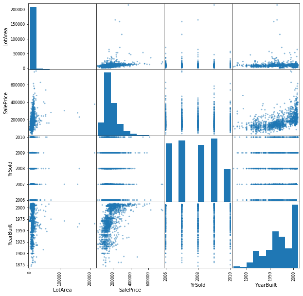
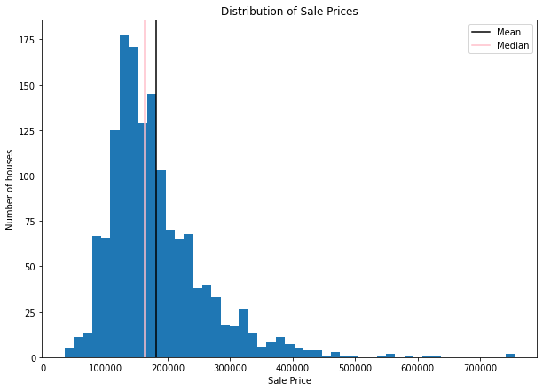
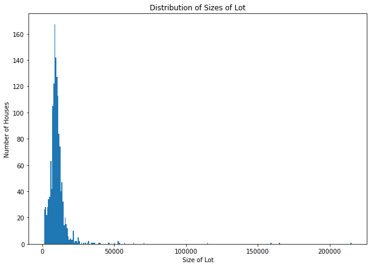
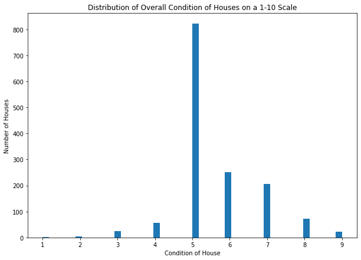
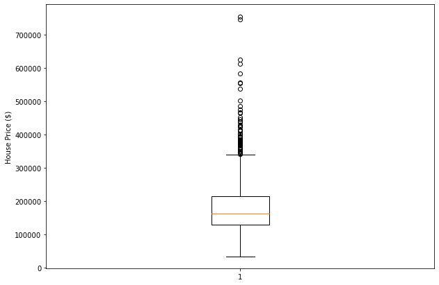
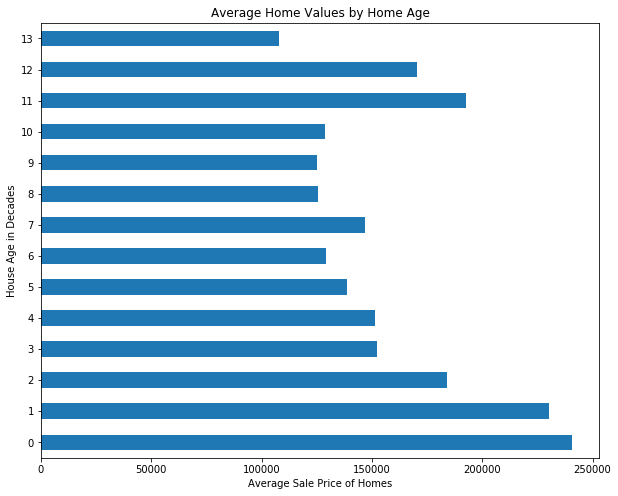

Project - EDA with Pandas Using the Ames Housing Data#
Introduction#
In this section, you’ve learned a lot about importing, cleaning up, analyzing (using descriptive statistics) and visualizing data. In this more free-form project, you’ll get a chance to practice all of these skills with the Ames Housing dataset, which contains housing values in the suburbs of Ames.
Objectives#
You will be able to:
Perform a full exploratory data analysis process to gain insight about a dataset
Goals#
Use your data munging and visualization skills to conduct an exploratory analysis of the dataset below. At a minimum, this should include:
Loading the data (which is stored in the file
ames_train.csv)Use built-in Python functions to explore measures of centrality and dispersion for at least 3 variables
Create meaningful subsets of the data using selection operations like
.loc,.iloc, or related operations. Explain why you used the chosen subsets and do this for three possible 2-way splits. State how you think the two measures of centrality and/or dispersion might be different for each subset of the data.Next, use histograms and scatter plots to see whether you observe differences for the subsets of the data. Make sure to use subplots so it is easy to compare the relationships.
Variable Descriptions#
Look in data_description.txt for a full description of all variables.
A preview of some of the columns:
MSZoning: Identifies the general zoning classification of the sale.
A Agriculture
C Commercial
FV Floating Village Residential
I Industrial
RH Residential High Density
RL Residential Low Density
RP Residential Low Density Park
RM Residential Medium Density
OverallCond: Rates the overall condition of the house
10 Very Excellent
9 Excellent
8 Very Good
7 Good
6 Above Average
5 Average
4 Below Average
3 Fair
2 Poor
1 Very Poor
KitchenQual: Kitchen quality
Ex Excellent
Gd Good
TA Typical/Average
Fa Fair
Po Poor
YrSold: Year Sold (YYYY)
SalePrice: Sale price of the house in dollars
# Let's get started importing the necessary libraries
import pandas as pd
import numpy as np
import matplotlib.pyplot as plt
%matplotlib inline
# Loading the data
df = pd.read_csv('ames_train.csv')
print(df.shape)
df.head()
(1460, 81)
| Id | MSSubClass | MSZoning | LotFrontage | LotArea | Street | Alley | LotShape | LandContour | Utilities | ... | PoolArea | PoolQC | Fence | MiscFeature | MiscVal | MoSold | YrSold | SaleType | SaleCondition | SalePrice | |
|---|---|---|---|---|---|---|---|---|---|---|---|---|---|---|---|---|---|---|---|---|---|
| 0 | 1 | 60 | RL | 65.0 | 8450 | Pave | NaN | Reg | Lvl | AllPub | ... | 0 | NaN | NaN | NaN | 0 | 2 | 2008 | WD | Normal | 208500 |
| 1 | 2 | 20 | RL | 80.0 | 9600 | Pave | NaN | Reg | Lvl | AllPub | ... | 0 | NaN | NaN | NaN | 0 | 5 | 2007 | WD | Normal | 181500 |
| 2 | 3 | 60 | RL | 68.0 | 11250 | Pave | NaN | IR1 | Lvl | AllPub | ... | 0 | NaN | NaN | NaN | 0 | 9 | 2008 | WD | Normal | 223500 |
| 3 | 4 | 70 | RL | 60.0 | 9550 | Pave | NaN | IR1 | Lvl | AllPub | ... | 0 | NaN | NaN | NaN | 0 | 2 | 2006 | WD | Abnorml | 140000 |
| 4 | 5 | 60 | RL | 84.0 | 14260 | Pave | NaN | IR1 | Lvl | AllPub | ... | 0 | NaN | NaN | NaN | 0 | 12 | 2008 | WD | Normal | 250000 |
5 rows × 81 columns
# Investigate the Data
df.info()
<class 'pandas.core.frame.DataFrame'>
RangeIndex: 1460 entries, 0 to 1459
Data columns (total 81 columns):
# Column Non-Null Count Dtype
--- ------ -------------- -----
0 Id 1460 non-null int64
1 MSSubClass 1460 non-null int64
2 MSZoning 1460 non-null object
3 LotFrontage 1201 non-null float64
4 LotArea 1460 non-null int64
5 Street 1460 non-null object
6 Alley 91 non-null object
7 LotShape 1460 non-null object
8 LandContour 1460 non-null object
9 Utilities 1460 non-null object
10 LotConfig 1460 non-null object
11 LandSlope 1460 non-null object
12 Neighborhood 1460 non-null object
13 Condition1 1460 non-null object
14 Condition2 1460 non-null object
15 BldgType 1460 non-null object
16 HouseStyle 1460 non-null object
17 OverallQual 1460 non-null int64
18 OverallCond 1460 non-null int64
19 YearBuilt 1460 non-null int64
20 YearRemodAdd 1460 non-null int64
21 RoofStyle 1460 non-null object
22 RoofMatl 1460 non-null object
23 Exterior1st 1460 non-null object
24 Exterior2nd 1460 non-null object
25 MasVnrType 1452 non-null object
26 MasVnrArea 1452 non-null float64
27 ExterQual 1460 non-null object
28 ExterCond 1460 non-null object
29 Foundation 1460 non-null object
30 BsmtQual 1423 non-null object
31 BsmtCond 1423 non-null object
32 BsmtExposure 1422 non-null object
33 BsmtFinType1 1423 non-null object
34 BsmtFinSF1 1460 non-null int64
35 BsmtFinType2 1422 non-null object
36 BsmtFinSF2 1460 non-null int64
37 BsmtUnfSF 1460 non-null int64
38 TotalBsmtSF 1460 non-null int64
39 Heating 1460 non-null object
40 HeatingQC 1460 non-null object
41 CentralAir 1460 non-null object
42 Electrical 1459 non-null object
43 1stFlrSF 1460 non-null int64
44 2ndFlrSF 1460 non-null int64
45 LowQualFinSF 1460 non-null int64
46 GrLivArea 1460 non-null int64
47 BsmtFullBath 1460 non-null int64
48 BsmtHalfBath 1460 non-null int64
49 FullBath 1460 non-null int64
50 HalfBath 1460 non-null int64
51 BedroomAbvGr 1460 non-null int64
52 KitchenAbvGr 1460 non-null int64
53 KitchenQual 1460 non-null object
54 TotRmsAbvGrd 1460 non-null int64
55 Functional 1460 non-null object
56 Fireplaces 1460 non-null int64
57 FireplaceQu 770 non-null object
58 GarageType 1379 non-null object
59 GarageYrBlt 1379 non-null float64
60 GarageFinish 1379 non-null object
61 GarageCars 1460 non-null int64
62 GarageArea 1460 non-null int64
63 GarageQual 1379 non-null object
64 GarageCond 1379 non-null object
65 PavedDrive 1460 non-null object
66 WoodDeckSF 1460 non-null int64
67 OpenPorchSF 1460 non-null int64
68 EnclosedPorch 1460 non-null int64
69 3SsnPorch 1460 non-null int64
70 ScreenPorch 1460 non-null int64
71 PoolArea 1460 non-null int64
72 PoolQC 7 non-null object
73 Fence 281 non-null object
74 MiscFeature 54 non-null object
75 MiscVal 1460 non-null int64
76 MoSold 1460 non-null int64
77 YrSold 1460 non-null int64
78 SaleType 1460 non-null object
79 SaleCondition 1460 non-null object
80 SalePrice 1460 non-null int64
dtypes: float64(3), int64(35), object(43)
memory usage: 924.0+ KB
df.describe()
| Id | MSSubClass | LotFrontage | LotArea | OverallQual | OverallCond | YearBuilt | YearRemodAdd | MasVnrArea | BsmtFinSF1 | ... | WoodDeckSF | OpenPorchSF | EnclosedPorch | 3SsnPorch | ScreenPorch | PoolArea | MiscVal | MoSold | YrSold | SalePrice | |
|---|---|---|---|---|---|---|---|---|---|---|---|---|---|---|---|---|---|---|---|---|---|
| count | 1460.000000 | 1460.000000 | 1201.000000 | 1460.000000 | 1460.000000 | 1460.000000 | 1460.000000 | 1460.000000 | 1452.000000 | 1460.000000 | ... | 1460.000000 | 1460.000000 | 1460.000000 | 1460.000000 | 1460.000000 | 1460.000000 | 1460.000000 | 1460.000000 | 1460.000000 | 1460.000000 |
| mean | 730.500000 | 56.897260 | 70.049958 | 10516.828082 | 6.099315 | 5.575342 | 1971.267808 | 1984.865753 | 103.685262 | 443.639726 | ... | 94.244521 | 46.660274 | 21.954110 | 3.409589 | 15.060959 | 2.758904 | 43.489041 | 6.321918 | 2007.815753 | 180921.195890 |
| std | 421.610009 | 42.300571 | 24.284752 | 9981.264932 | 1.382997 | 1.112799 | 30.202904 | 20.645407 | 181.066207 | 456.098091 | ... | 125.338794 | 66.256028 | 61.119149 | 29.317331 | 55.757415 | 40.177307 | 496.123024 | 2.703626 | 1.328095 | 79442.502883 |
| min | 1.000000 | 20.000000 | 21.000000 | 1300.000000 | 1.000000 | 1.000000 | 1872.000000 | 1950.000000 | 0.000000 | 0.000000 | ... | 0.000000 | 0.000000 | 0.000000 | 0.000000 | 0.000000 | 0.000000 | 0.000000 | 1.000000 | 2006.000000 | 34900.000000 |
| 25% | 365.750000 | 20.000000 | 59.000000 | 7553.500000 | 5.000000 | 5.000000 | 1954.000000 | 1967.000000 | 0.000000 | 0.000000 | ... | 0.000000 | 0.000000 | 0.000000 | 0.000000 | 0.000000 | 0.000000 | 0.000000 | 5.000000 | 2007.000000 | 129975.000000 |
| 50% | 730.500000 | 50.000000 | 69.000000 | 9478.500000 | 6.000000 | 5.000000 | 1973.000000 | 1994.000000 | 0.000000 | 383.500000 | ... | 0.000000 | 25.000000 | 0.000000 | 0.000000 | 0.000000 | 0.000000 | 0.000000 | 6.000000 | 2008.000000 | 163000.000000 |
| 75% | 1095.250000 | 70.000000 | 80.000000 | 11601.500000 | 7.000000 | 6.000000 | 2000.000000 | 2004.000000 | 166.000000 | 712.250000 | ... | 168.000000 | 68.000000 | 0.000000 | 0.000000 | 0.000000 | 0.000000 | 0.000000 | 8.000000 | 2009.000000 | 214000.000000 |
| max | 1460.000000 | 190.000000 | 313.000000 | 215245.000000 | 10.000000 | 9.000000 | 2010.000000 | 2010.000000 | 1600.000000 | 5644.000000 | ... | 857.000000 | 547.000000 | 552.000000 | 508.000000 | 480.000000 | 738.000000 | 15500.000000 | 12.000000 | 2010.000000 | 755000.000000 |
8 rows × 38 columns
# Investigating Distributions using scatter_matrix
pd.plotting.scatter_matrix(df[['LotArea', 'SalePrice', 'YrSold', 'YearBuilt']], figsize=(10,10));

vals = [0]
# Create a plot that shows the SalesPrice Distribution
fig, ax = plt.subplots(figsize=(10, 7))
ax.hist(df['SalePrice'], bins='auto')
ax.set_title('Distribution of Sale Prices')
ax.set_xlabel('Sale Price')
ax.set_ylabel('Number of houses')
ax.axvline(df['SalePrice'].mean(), color='black',label='Mean');
ax.axvline(df['SalePrice'].median(), color='pink',label='Median');
ax.legend()
<matplotlib.legend.Legend at 0x7fde48255fd0>

# Comment:
# Looks like a log normal distribution; most houses in this sample are clustered around $150,000
# Create a plot that shows the LotArea Distribution
fig, ax = plt.subplots(figsize=(10, 7))
ax.hist(df['LotArea'], bins='auto');
ax.set_title('Distribution of Sizes of Lot')
ax.set_xlabel('Size of Lot')
ax.set_ylabel('Number of Houses');

# Comment:
# The number of rooms in houses is approximately normally distributed,
# with a mean around 6 rooms.
# Create a plot that shows the Distribution of the overall house condition
fig, ax = plt.subplots(figsize=(10, 7))
ax.hist(df['OverallCond'], bins='auto');
ax.set_title('Distribution of Overall Condition of Houses on a 1-10 Scale')
ax.set_xlabel('Condition of House')
ax.set_ylabel('Number of Houses');

# Comment:
# Most homes have a condition of 5
# Create a Box Plot for SalePrice
fig, ax = plt.subplots(figsize=(10, 7))
ax.boxplot(df['SalePrice'])
ax.set_ylabel('House Price ($)');

## Investigation Correlations with Sale Price
df['SalePrice']#.corr()
0 208500
1 181500
2 223500
3 140000
4 250000
...
1455 175000
1456 210000
1457 266500
1458 142125
1459 147500
Name: SalePrice, Length: 1460, dtype: int64
## Investigation Correlations with Sale Price
df.corr()['SalePrice'].sort_values()
KitchenAbvGr -0.135907
EnclosedPorch -0.128578
MSSubClass -0.084284
OverallCond -0.077856
YrSold -0.028923
LowQualFinSF -0.025606
Id -0.021917
MiscVal -0.021190
BsmtHalfBath -0.016844
BsmtFinSF2 -0.011378
3SsnPorch 0.044584
MoSold 0.046432
PoolArea 0.092404
ScreenPorch 0.111447
BedroomAbvGr 0.168213
BsmtUnfSF 0.214479
BsmtFullBath 0.227122
LotArea 0.263843
HalfBath 0.284108
OpenPorchSF 0.315856
2ndFlrSF 0.319334
WoodDeckSF 0.324413
LotFrontage 0.351799
BsmtFinSF1 0.386420
Fireplaces 0.466929
MasVnrArea 0.477493
GarageYrBlt 0.486362
YearRemodAdd 0.507101
YearBuilt 0.522897
TotRmsAbvGrd 0.533723
FullBath 0.560664
1stFlrSF 0.605852
TotalBsmtSF 0.613581
GarageArea 0.623431
GarageCars 0.640409
GrLivArea 0.708624
OverallQual 0.790982
SalePrice 1.000000
Name: SalePrice, dtype: float64
# It looks like OverallQual and GrLivArea are most highly correlated with SalePrice.
# These features would be a good place to start for modeling
# Other investigations will vary
# Perform an Exploration of home values by age
df['age'] = df['YrSold'] - df['YearBuilt']
df['decades'] = df.age // 10
col = 'SalePrice'
to_plot = df.groupby('decades')[col].mean()
to_plot
decades
0 240855.084951
1 230285.632653
2 183904.062500
3 152137.316583
4 151425.054645
5 138841.519737
6 129389.642857
7 146676.568627
8 125425.050505
9 124934.923077
10 128546.428571
11 192584.500000
12 170425.571429
13 108000.000000
Name: SalePrice, dtype: float64
to_plot.plot(kind='barh', figsize=(10,8))
plt.ylabel('House Age in Decades')
plt.xlabel('Average Sale Price of Homes')
plt.title('Average Home Values by Home Age');

# Comment:
# Younger houses appear to be more valuable with decreasing value as it ages.
# Interestingly there is a spike at decade 11 and 12 in house price further investigation is required
Summary#
Congratulations, you’ve completed your first “free form” exploratory data analysis of a popular dataset!